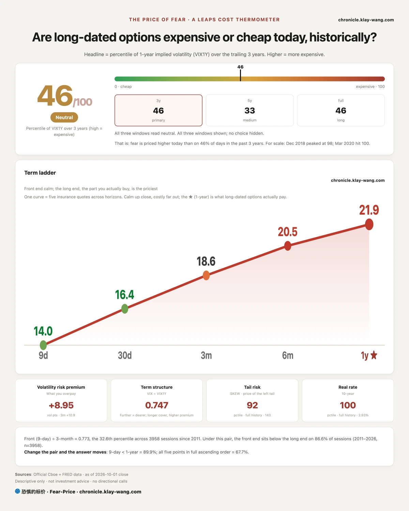
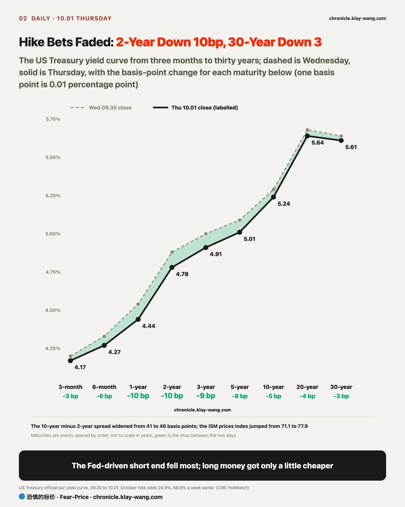
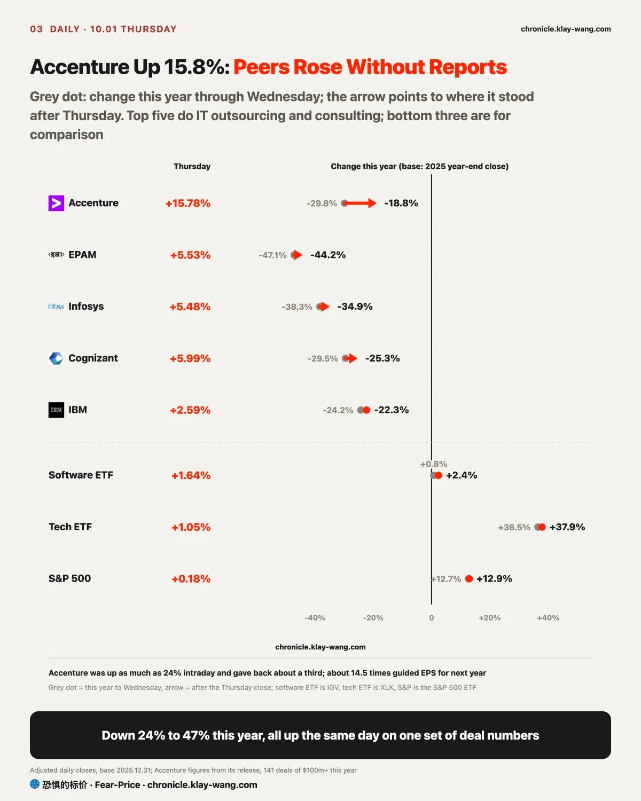
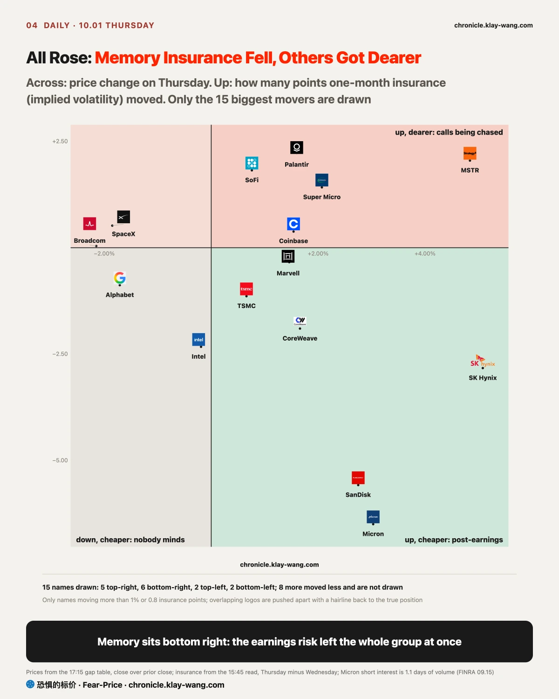

Fear-Price Index · 2026-10-01 · Reading 46.4/100: one-year volatility VIX1Y is 21.93, at the 46.4th percentile of the past three years; higher means more expensive. Daily ledger and method → chronicle.klay-wang.com · Please cite: Fear-Price Index
The cost of one-year insurance on US stocks rose from 42.9 to 46.4 on Thursday (out of 100, higher is dearer), above the 45.5 at the end of August. The Wednesday reading was that the rise came from the late drop and would fade once that drop was recovered; on Thursday the S&P recovered the Wednesday close and insurance got 3.5 points dearer, so the Wednesday call was wrong. Apart from 9-day volatility, which fell from 14.2 to 14.0, one month, three months, six months and a year all rose slightly: stocks rose for a day and nobody cut the price of insurance, so the market has not let its guard down. For you, protection now sits right in the middle of its three-year range; if you want to keep the gains you have, protection out to three months is much cheaper than one year.
The K Index is 1.714, below the Wednesday final of 1.852. The closer K is to 1, the more people are turning worry into money spent on protection; on Thursday the talk of worry rose a little and the money spent on protection did not follow. On the current Fear & Greed reading, the VIX would need to rise above 28.1 for K to fall below 1. History at chronicle.klay-wang.com/kindex; the index at chronicle.klay-wang.com/fear-price.

The conclusion first: the first half of October looks steady; how far stocks can rise depends on the 10-year, and on current pricing it will not ease, so gains in this stretch must come from profits, not valuations.
Why the near term is steady. Stocks are most vulnerable to a sudden jump in borrowing costs, and the clearest such risk in October was another hike at the October 28 meeting. New York Fed President John Williams said on Tuesday there was no need to hurry, and Vice Chair Philip Jefferson said on Thursday it may take more time to read the data. Odds of an October hike fell from 68.6% a week ago to 24.9%, and markets now bet on December. The 2-year yield reflects the rate path over the next year or two; it fell 10 basis points on Thursday, the biggest drop since the September hike. That risk has been defused.
Why the long end did not ease. Moving one hike from October to December barely changes the average rate over ten years, so the 10-year should fall less than the 2-year anyway; that alone proves nothing. The level is what counts: 5.24%, still near its highest since 2002, with the 30-year at 5.61%. In the data released that day, the prices paid index in the manufacturing survey jumped from 71.1 to 77.9 and oil rose another 3%; inflation has not eased, so the compensation for lending for ten years has no reason to fall, and borrowers end up paying it.
Stock valuations discount future profits at long-term rates. If the long end does not fall, valuations cannot rise; the S&P 500 ETF is up 12.9% this year on profits, and this month it can rise only on profits too, which makes big tech earnings at month end matter more than the Fed.
When the short end falls, those who borrow short benefit first. Small companies rely on bank loans priced off the short end; regional banks take deposits and make loans, so a short end falling more than the long end widens their margin. On Thursday small caps, regional banks and the equal-weight S&P all beat the S&P 500 ETF, and 295 of 500 stocks rose against 113 on Wednesday. One day of breadth does not make a trend, but its direction matches rates. If all you hold are the few big names that led September, what to watch in this stretch is their profits; the Fed cannot help.
My calls are these three; by history since 2011, each holds more than 80% of the time:
- After payrolls on October 2 (Friday), the 2-year closes below 4.92%, not back to its Monday level before Williams spoke. Since 2023, the 2-year has risen 14 basis points or more on only about 15% of payroll days; a close back above 4.92% means hike bets are back.
- On October 30 the 10-year still closes above 5%. Since 2011 the 10-year has fallen 25 basis points or more in a month about one time in ten; a close below 5% means long-term compensation has started to ease and the ceiling is higher than written here.
- Before October 16 (Friday), the VIX does not close above 25. When the VIX sat between 15 and 18, it closed above 25 within the next two weeks only 6% of the time since 2011; if it does, the near term was not steady.
Money is betting on the long end too. Calls on the long bond fund expiring in a year, with a strike more than 10% above the price, saw about 76000 new contracts on Thursday against open interest of 4190, about 12.3 million dollars traded, the largest long-dated trade of the day; the bet is on whether the 10-year can fall within a year. The long bond fund page is at chronicle.klay-wang.com/t/TLT.en.

Accenture rose 15.77% on Thursday after rising as much as 24% intraday, and peers with no report of their own rose 5% to 6%.
The business is doing IT and consulting work for large companies, such as rebuilding systems for banks or moving firms to the cloud and installing AI, paid by the project; what it sells is the time of engineers and consultants. The same group includes Cognizant, EPAM, Infosys and the consulting arm of IBM.
This group fell hard this year because markets feared AI would take their work. A project used to need hundreds of engineers writing code for months; as AI gets better at writing code, clients may not need to buy as many hours, and a business that earns by headcount has a revenue problem when demand for heads falls. Before Thursday, Accenture was down nearly 30% this year and EPAM 47%, while the tech ETF rose more than 30%: money chased the companies selling AI and left the ones AI might replace. Results did not collapse; Accenture full-year revenue still grew 5% in local currency.
Its fourth-quarter report before the open on Thursday gave the first number that answers that fear: deals of more than 100 million dollars reached 141 for the year, a record; fourth-quarter revenue beat the top of its own guidance; and next year it expects growth of 3% to 6%. Big clients are still signing big deals, and more of them; so far AI has not made clients come to it less. With part of the fear gone, peers rose with it, as markets assumed their demand holds too; software rose only 1.64% that day, so this was a repricing of this one group.
The tape calls for some caution. It rose 24% intraday and gave back a third by the close, so the money chasing it was not that sure; after the jump it trades at about 14.5 times guided earnings for next year, still not expensive. Accenture should close above 200 dollars through October 16 (Friday): it would need to fall another 5.8%, which over the past four years happened in 11 trading days about one time in four. A break below 200 would mean this repricing does not hold and the rise was mood. If you hold one of these outsourcers, the large-deal count in the next report from the group matters more than this one day.

Micron, SanDisk and SK Hynix all rose on Thursday while their insurance got cheaper: Micron one-month insurance fell from 59.11 to 52.61, landing bottom right among the 15 biggest movers. That corner is usually read as short sellers covering, but not on this day: the Micron earnings risk had passed, and SanDisk and SK Hynix options had priced the Micron report too, so all three fell together. Shorts were scarce anyway, with Micron short interest worth only 1.1 days of volume and SanDisk 1.0, so there was little to cover.
The rise was bought with real money during the day. Micron opened 1.04% lower and was bought all day, closing up 3.03% on more than 40% more volume than Wednesday. The Wednesday reading was that the good news was already in the price; Thursday proved that reading wrong, as the day made up what earnings night had not. MSTR, Palantir and SoFi in the top right rose another way: shares and options got dearer together, mostly calls being chased.
The September 22 call was that the memory rally of those days was buyers hedging their own positions; by the test written then, both stocks kept rising on Thursday and both insurance prices fell below the line, so the call is withdrawn. The withdrawal exposes the test itself: around earnings, moves in the price of protection mostly reflect the earnings risk, and they cannot tell who is buying. If you hold memory stocks, watch whether volume holds above Thursday; protection prices say little for now. The Micron page is at chronicle.klay-wang.com/t/MU.en.

Quarter-end close was rebalancing: half right. The test filed on September 30 was a Thursday close back above 766.34. The S&P 500 ETF closed at 763.99, above the Wednesday close but short of where it stood before that last half hour; the last half hour traded at a normal pace, with no repeat of the Wednesday wave of sell orders.
Nvidia November calls were rolling up: withdrawn. Thursday morning settlement, the contracts still held, showed the two old strikes down only about 42000 and 47000 contracts, short of the 50000 the test required, while the two new strikes each added about 70000; new positions exceeded closed ones by more than 50000, so this was not just a change of strikes. The Nvidia page is at chronicle.klay-wang.com/t/NVDA.en.
Higher rates came from long-term compensation: holds. The test was the 2-year back above 4.92% and rising more than the 10-year; on Thursday the 2-year fell to 4.78%.
The rate shock landed first on regional banks: settles at 15:45 on October 2. This call touched its line once on September 28, when one-month insurance on the regional bank fund fell below its one-year level; it was decided then that one touch does not count, and the call settles on the 15:45 reading on October 2. At the Thursday close its one-month insurance was 29.74, still above the one-year 29.01.
The thin-volume memory drop was no buyers: holds. The rate shock had not reached credit: holds. The second was close: the average one-month insurance on the six big banks peaked at 31.95, only 0.03 below the 31.98 line.
If you hold long bonds or have a mortgage to renew: the short end eased, the long end did not. Mortgages follow the 10-year and will not get much cheaper this round; historically the 10-year falls 25 basis points or more within a month about one time in five, so do not plan on waiting for cuts.
If you hold small caps or regional banks: this stretch is a tailwind for them, since a falling short end helps them most directly. If payrolls on Friday push the 2-year back above 4.92%, that tailwind stops.
If you hold big tech: without a lower long end, gains must come from profits; before reports at month end, check the price of protection on the ones that ran most. One-year protection sits mid-range over three years, not expensive.
If you hold chip, memory or outsourcing stocks: the memory rise was pushed by daytime buying, so watch whether volume holds; outsourcers had one report disprove part of a fear, and the large-deal count in the next report from the group is the key.